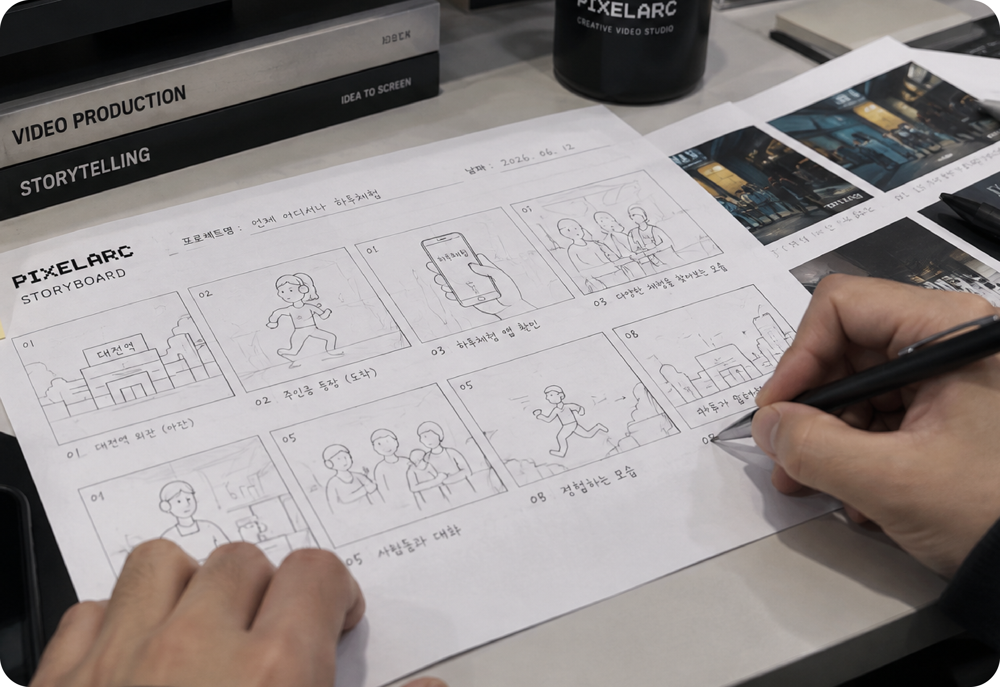
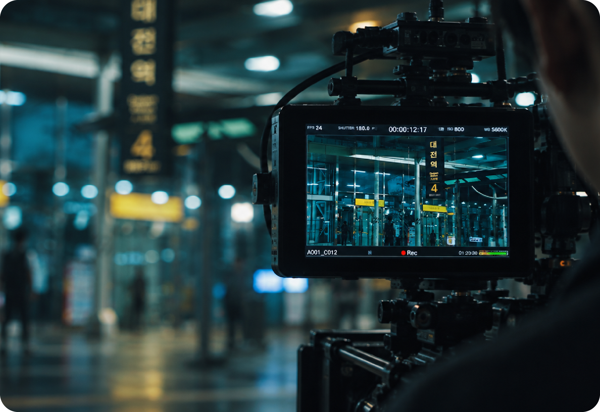
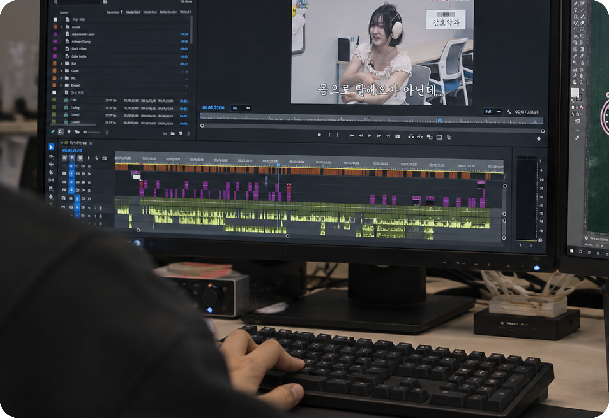
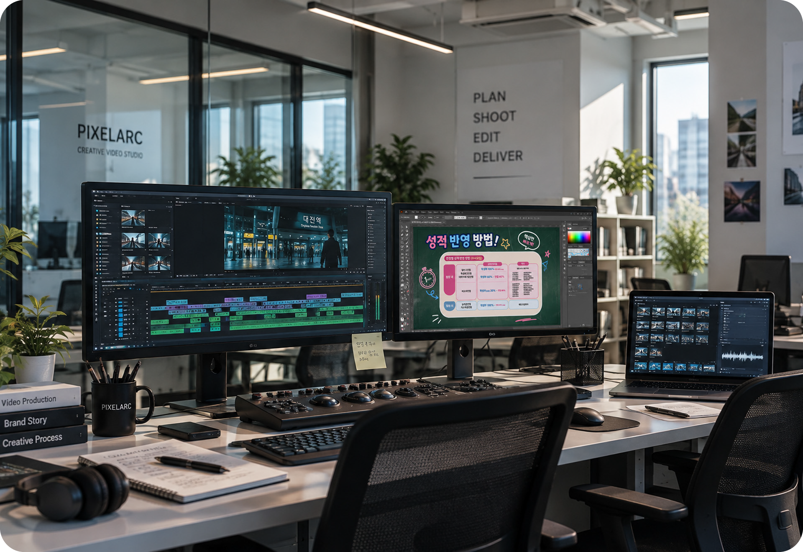

기획부터 촬영, 편집까지.
영상 제작의 전 과정을 한 팀이 직접 진행하여
브랜드의 목적에 맞는 가장 효과적인 영상을 만듭니다.
각 프로젝트의 목적과 예산에 맞춰
가장 효율적인 제작 방식을 제안합니다.

아이디어를 구체적인 영상으로
브랜드의 목적과 타겟에 맞춰
콘셉트, 구성, 스토리보드를 기획합니다.

현장의 생생함을 그대로
다양한 장비와 경험을 바탕으로
기획한 내용을 영상으로 담아냅니다.

영상에 메세지를 더하다.
촬영한 영상을 목적에 맞게 편집하고
색보정, 자막, 모션그래픽 등을 더해 완성도 높은 영상을 제작합니다.

비즈니스에 맞춘 맞춤형 영상
기업 홍보, SNS 콘텐츠, 유튜브 채널,
행사 기록 등 다양한 목적에 맞는 영상 제작 솔루션을 제공합니다.
모든 프로젝트는 목적과 예산에 맞춰
유연하게 진행됩니다.
아래의 서비스 구성을 참고해 주세요.
원하는 스타일과 예산에 맞춰 다양한 형태로 제작이 가능합니다.
기업, 브랜드, 제품의 가치를 효과적으로 전달하는 홍보 영상
예능, 다큐, 인터뷰 등 채널에 맞는 기획과 편집
SNS, 릴스, 틱톡 등 세로형 짧은 영상 제작
행사, 세미나, 현장 스케치 등 다양한 기록 영상
영상은 작은 조건에도 구성이 크게 달라집니다.
아래 요소를 바탕으로 예산에 맞는 구성을 제안드립니다.
숏폼 한 편인지, 본편과 숏폼을 함께 제작하는지에 따라 작업량이 달라집니다.
하루 촬영인지, 여러 장소를 이동하며 촬영하는지에 따라 인력과 장비 구성이 달라집니다.
인터뷰, 출연자 섭외, 현장 촬영 인원 등 필요한 인력에 따라 구성이 달라집니다.
자막, 모션그래픽, CG 등 후반 작업의 범위에 따라 편집 기간이 달라집니다.
편집본 확인 후 진행하는 수정의 횟수와 범위를 계약 시 함께 정합니다.
희망 납품일과 사용 목적(유튜브, SNS, 행사 상영 등)에 맞춰 일정을 조율합니다.
예산이 정해지지 않아도 괜찮습니다.
목적과 희망 일정만 알려주시면 가능한 구성을 함께 찾아드립니다.
궁금한 점이 더 있다면
언제든 편하게 문의해 주세요.
프로젝트 규모에 따라 다르지만, 숏폼 한 편은 보통 1~2주, 촬영이 포함된 홍보영상은 3~5주 정도 소요됩니다. 일정이 급한 경우 상담 시 미리 말씀해 주세요.
물론입니다. 영상의 목적과 원하는 방향만 알려주시면, 예산 범위에 맞춰 가능한 구성을 제안드립니다.
수정 횟수와 범위는 계약 시 함께 정하며, 보통 편집본 확인 후 2회 내외로 진행합니다.
네. 보유하신 촬영 원본으로 컷 편집, 자막, 색보정, 모션그래픽 등 후반 작업만 진행할 수 있습니다.
대전을 기반으로 전국 어디든 촬영이 가능합니다. 출장 비용은 거리와 일정에 따라 견적에 포함됩니다.
사용 목적에 맞는 해상도와 화면 비율의 영상 파일(MP4)로 납품하며, 숏폼 버전이나 썸네일도 함께 요청하실 수 있습니다.